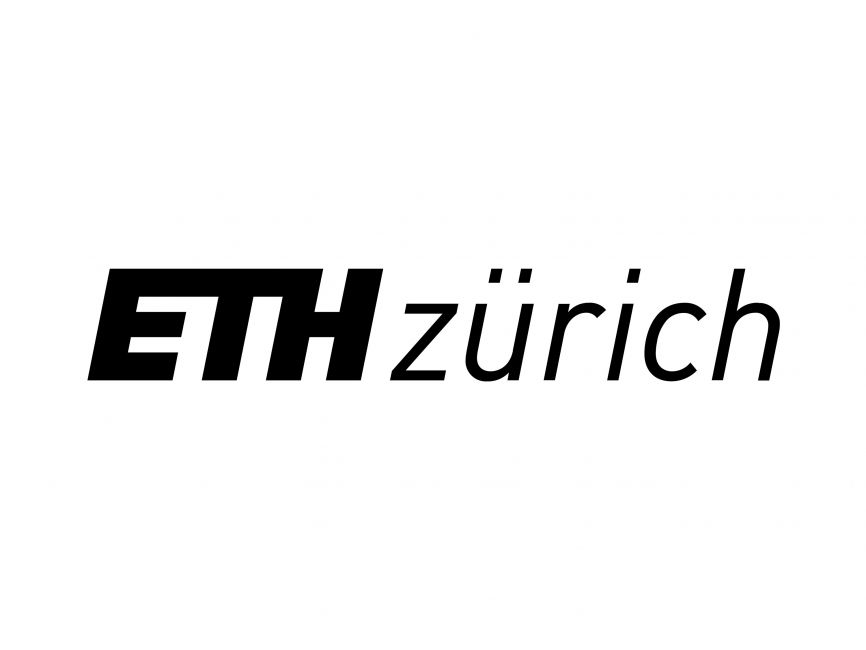
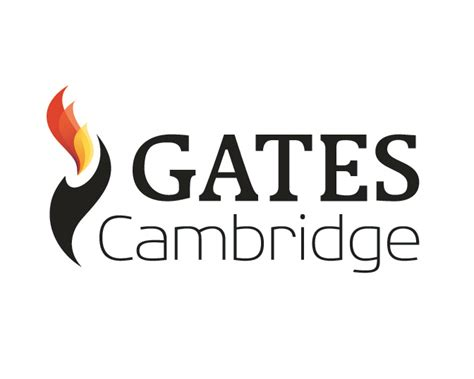
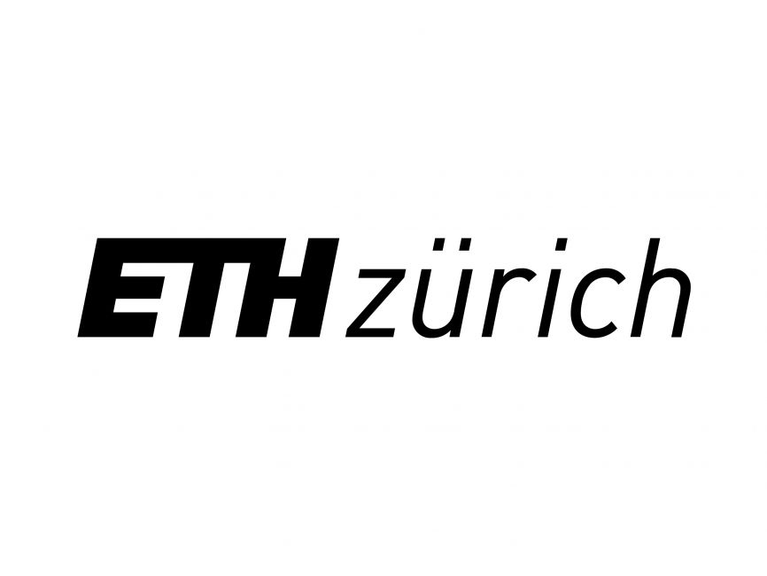
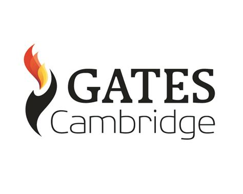

Hey there! I am a PhD candidate in the Energy & Environment Group, led by Professor Srinivasan Keshav, at the Department of Computer Science & Technology, University of Cambridge. My research, funded by the Gates Cambridge Trust, focuses on leveraging Machine Learning for the decarbonisation of buildings.
Previously, I have explored the design and operation of sustainable energy systems for residential homes, incorporating technologies such as solar PV, stationary batteries, and bidirectional EVs. My work led to the development of SOPEVS, an innovative algorithm that personalises the joint sizing and operation of solar PV and storage for single-family homes. Additionally, I created SPAGHETTI, a synthetic data generation tool for modelling EV usage traces.
Currently, my research is centred on combining reinforcement learning with decision transformers to optimise the operation of HVAC systems, energy storage and EV charging in commercial buildings. I hold a degree in Computer Science from ETH Zürich.

 


